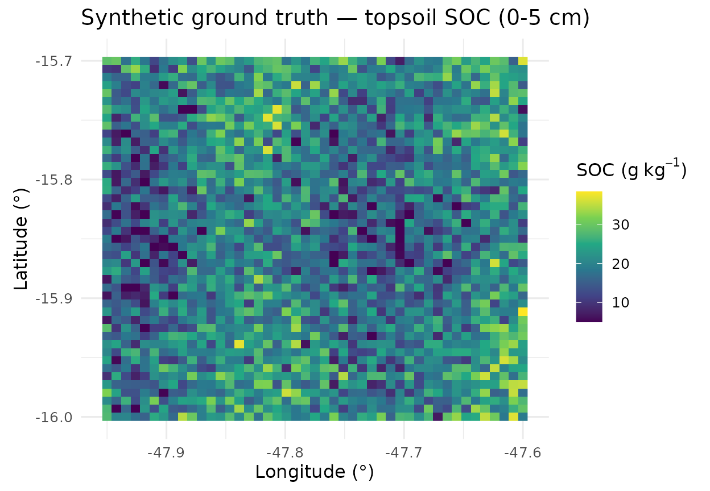
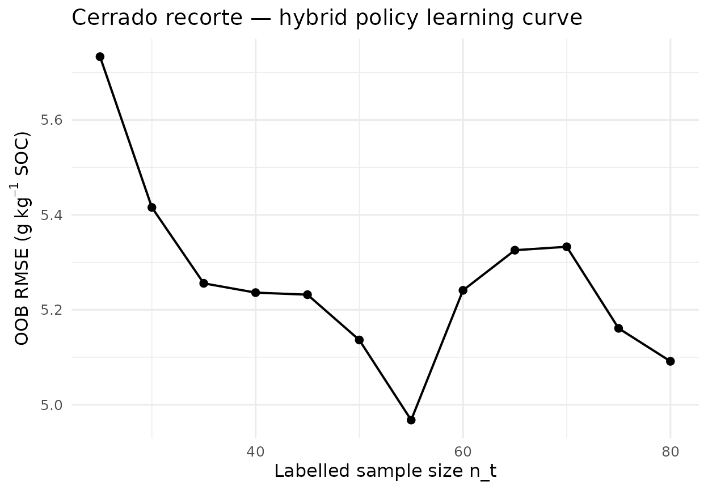
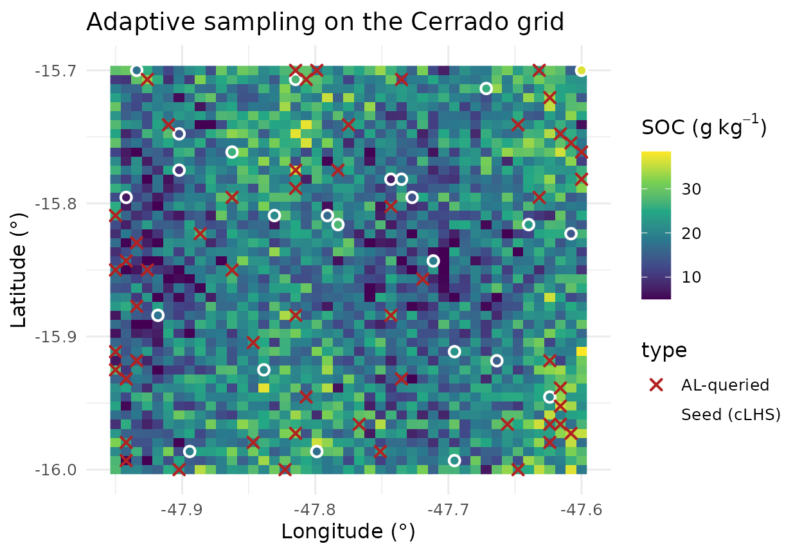

Pilar 5 — Active Learning on a Brazilian Cerrado Transect
Hugo Rodrigues
Source:vignettes/articles/pilar5-soilgrids-br.Rmd
pilar5-soilgrids-br.RmdAbstract
We apply the Pillar 5 Active Learning loop of edaphos to
the bundled br_cerrado sample — a reproducible 45 × 45
pixel synthetic surrogate for a 30 km square near Brasília (Distrito
Federal, Brazil). The exercise mirrors the realistic cost structure of a
DSM project in the Cerrado biome (Arrouays et al. 2014; Minasny et al. 2017): limited
sampling budget, non-trivial covariate interactions, and a soil organic
carbon response driven by topography, climate and vegetation cover.
1. Bundled surrogate dataset
br_cerrado is generated by the script
data-raw/prepare_br_cerrado.R, which also includes a
ready-to-run live-fetch block against SoilGrids 250 m (Hengl et al.
2017), WorldClim and SRTM via the geodata
package. Synthetic data are used here only to ensure that the vignette
builds offline, reproducibly, in every CI environment.
library(edaphos)
data(br_cerrado, package = "edaphos")
str(br_cerrado)
#> 'data.frame': 2025 obs. of 8 variables:
#> $ x : num -48 -47.9 -47.9 -47.9 -47.9 ...
#> $ y : num -16 -16 -16 -16 -16 -16 -16 -16 -16 -16 ...
#> $ elev : num 904 928 900 912 934 ...
#> $ slope : num 2.59 9.9 14.19 6.23 11.89 ...
#> $ twi : num 10.32 11.23 11.47 11.28 8.12 ...
#> $ map_mm: num 1197 1239 1209 1160 1225 ...
#> $ ndvi : num 0.719 0.619 0.531 0.586 0.517 0.648 0.668 0.529 0.648 0.693 ...
#> $ soc : num 27.6 20.1 20.2 17.2 15.7 ...
summary(br_cerrado[, c("soc", "elev", "twi", "ndvi", "map_mm")])
#> soc elev twi ndvi
#> Min. : 5.00 Min. : 682.9 Min. : 1.023 Min. :0.314
#> 1st Qu.:15.19 1st Qu.: 862.3 1st Qu.: 7.799 1st Qu.:0.481
#> Median :19.47 Median : 932.8 Median :10.062 Median :0.539
#> Mean :19.50 Mean : 937.5 Mean : 9.933 Mean :0.542
#> 3rd Qu.:24.06 3rd Qu.:1015.1 3rd Qu.:12.058 3rd Qu.:0.598
#> Max. :38.41 Max. :1254.2 Max. :15.000 Max. :0.872
#> map_mm
#> Min. :1056
#> 1st Qu.:1326
#> Median :1498
#> Mean :1500
#> 3rd Qu.:1673
#> Max. :1908
library(ggplot2)
ggplot(br_cerrado, aes(x, y, fill = soc)) +
geom_raster() +
scale_fill_viridis_c(option = "D",
name = expression("SOC ("*g~kg^{-1}*")")) +
coord_equal() +
labs(title = "Synthetic ground truth — topsoil SOC (0-5 cm)",
x = "Longitude (°)", y = "Latitude (°)") +
theme_minimal(base_size = 12)
2. Sampling scenario
Budget
:
initial samples selected by cLHS (Minasny and McBratney 2006) and
additional samples chosen by the Pillar 5 hybrid policy (Section 1 of
pilar5-active-learning).
covs <- c("elev", "slope", "twi", "map_mm", "ndvi")
set.seed(101)
seed_idx <- al_initial_design(br_cerrado, covariates = covs,
n = 25, iter = 1500)
labeled0 <- br_cerrado[ seed_idx, ]
candidates <- br_cerrado[-seed_idx, ]
c(n_labeled = nrow(labeled0), n_candidates = nrow(candidates))
#> n_labeled n_candidates
#> 25 20003. Closed-loop run
set.seed(101)
model <- al_loop(
labeled = labeled0, candidates = candidates,
target = "soc", covariates = covs,
coords = c("x", "y"),
budget = 55, batch = 5,
strategy = "hybrid", alpha = 0.7,
num.trees = 500L, verbose = FALSE
)
model
#> <edaphos_al_model>
#> target : soc
#> covariates : elev, slope, twi, map_mm, ndvi
#> coords : x, y
#> n labeled : 80
#> iterations : 11
#> last RMSE : 5.0914. Learning curve
h <- al_history(model)
h
#> iter n_labeled rmse_oob mean_uncertainty
#> 1 0 25 5.733250 NA
#> 2 1 30 5.415597 29.5840
#> 3 2 35 5.255724 22.3180
#> 4 3 40 5.236142 20.1740
#> 5 4 45 5.231821 21.0400
#> 6 5 50 5.136356 21.8200
#> 7 6 55 4.967628 19.6020
#> 8 7 60 5.240995 18.9420
#> 9 8 65 5.325520 19.5980
#> 10 9 70 5.332727 20.1256
#> 11 10 75 5.160961 19.0220
#> 12 11 80 5.091422 18.3340
ggplot(h, aes(n_labeled, rmse_oob)) +
geom_line(linewidth = 0.7) + geom_point(size = 2) +
labs(x = "Labelled sample size n_t",
y = expression("OOB RMSE ("*g~kg^{-1}*" SOC)"),
title = "Cerrado recorte — hybrid policy learning curve") +
theme_minimal(base_size = 12)
5. Where did the algorithm decide to sample?
Superimposing seed locations on the queried set visualises the policy’s preference for covariate-transition zones — the hallmark of uncertainty sampling (Settles 2009; Lagacherie et al. 2022).
seed_xy <- labeled0[, c("x", "y")]; seed_xy$type <- "Seed (cLHS)"
queried_xy <- model$labeled[-seq_len(nrow(labeled0)), c("x", "y")]
queried_xy$type <- "AL-queried"
samp <- rbind(seed_xy, queried_xy)
ggplot() +
geom_raster(data = br_cerrado, aes(x, y, fill = soc)) +
scale_fill_viridis_c(option = "D",
name = expression("SOC ("*g~kg^{-1}*")")) +
geom_point(data = samp, aes(x, y, shape = type, colour = type),
size = 2.2, stroke = 1.1) +
scale_colour_manual(values = c("Seed (cLHS)" = "white",
"AL-queried" = "firebrick")) +
scale_shape_manual(values = c("Seed (cLHS)" = 1, "AL-queried" = 4)) +
coord_equal() +
labs(title = "Adaptive sampling on the Cerrado grid",
x = "Longitude (°)", y = "Latitude (°)") +
theme_minimal(base_size = 12)
6. Transitioning to live SoilGrids data
To re-run this vignette on live SoilGrids 250 m data (Hengl et al. 2017) plus WorldClim precipitation and SRTM elevation:
- Open
data-raw/prepare_br_cerrado.Rand toggleif (FALSE)toif (TRUE)— the block fetches the real covariate stack for the same bounding box. - Optionally enrich with MapBiomas land-use/land-cover as a categorical covariate.
- Re-save with
usethis::use_data(br_cerrado, overwrite = TRUE). - Re-knit this vignette unchanged.
7. Discussion
Two observations follow. First, cLHS alone already achieves a respectable seed RMSE because it is designed to span the joint covariate distribution (Minasny and McBratney 2006). Second, the marginal gain from Active Learning is largest in the transition zones where soil processes change regime — precisely where expert judgement historically placed transects. The formalism in Pillar 5 replaces that judgement with a reproducible, model-driven criterion.